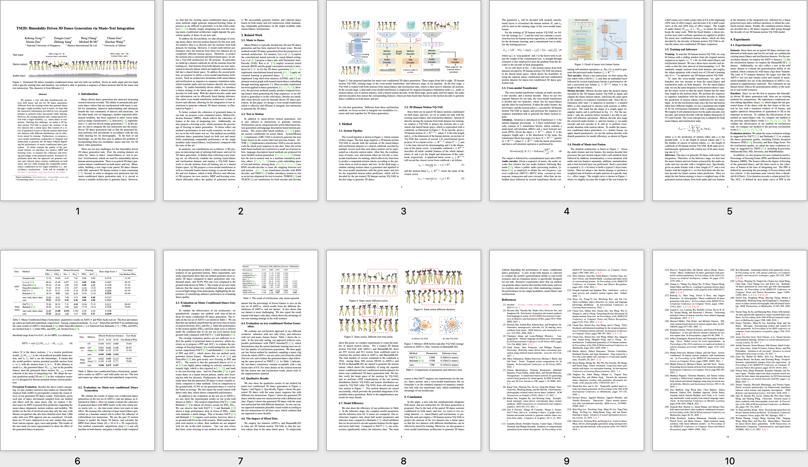

TM2D: Bimodality Driven 3D Dance Generation via Music-Text Integration
|
1National University of Singapore
|
2Tsinghua University
|
3University of Alberta
|
We propose a new task that simultaneously utilizes both music and text for 3D dance generation. Different from the existing works that generate dance through a single modality such as music, we hope that the instructive information provided by text can guide humans to perform richer movements while dancing. However, the existing datasets only contain paired motion with a single modality, e.g., music-dance or text-motion. Tackling this challenge, we utilize a 3D human motion VQ-VAE to project the motions of the two datasets into a latent space that consists of a series of quantized vectors so that the motion token from two datasets with different distributions can be effectively mixed for training. Furthermore, we propose a cross modal transformer architecture to integrate text instructions to generate the 3D dance without degrading the performance of music-conditioned dance generation. To better evaluate the quality of the generated motion, we introduce two metrics, MDP and Freezing score, to measure the coherence and freezing percentage of the generated motion. Extensive experiments show that our approach can generate realistic and coherent dance motion conditioned on both music and text while keeping the comparable performance conditioned on two single modalities (i.e., music2dance, text2motion).
Paper
|
 |
|
TM2D: Bimodality Driven 3D Dance Generation via Music-Text Integration
Kehong Gong, Dongze Lian, Heng Chang, Chuan Guo, Xinxin Zuo, Zhihang Jiang, Xinchao Wang
ArXiv, 2023
[Paper]
[Bibtex]
|
Demo Video
Acknowledgements
This webpage template was borrowed from here.
|
*Equal contribution.
{kind=link}